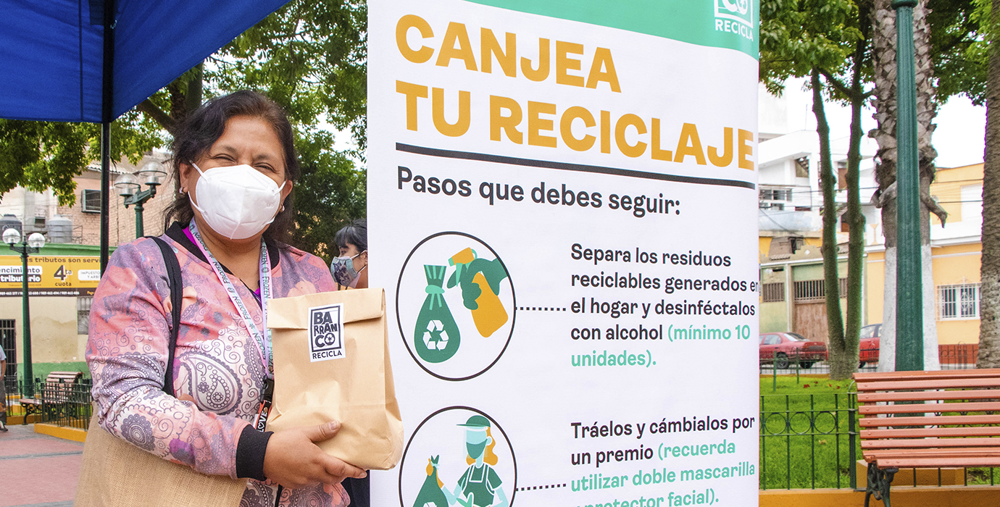

Campaña de Reciclaje 2022
Estra Campaña promoverá la articulación y participación del gobierno, de empresas y de la sociedad
civil en soluciones integrales para la mitigación del cambio climático. Empresas y ciudadanos que desean
donar sus residuos pueden sumarse.
El equipo voluntarios, realiza un análisis de la cantidad de reciclables
que genera la empresa y estipula los días y la frecuencia de recolección que se deberá cumplir. Cada fin
de mes Ciudad Saludable genera una constancia para la empresa donde se indican la cantidad de kilogramos
reciclados y los beneficios sociales, económicos y
ambientales logrados por su participación en la ruta.